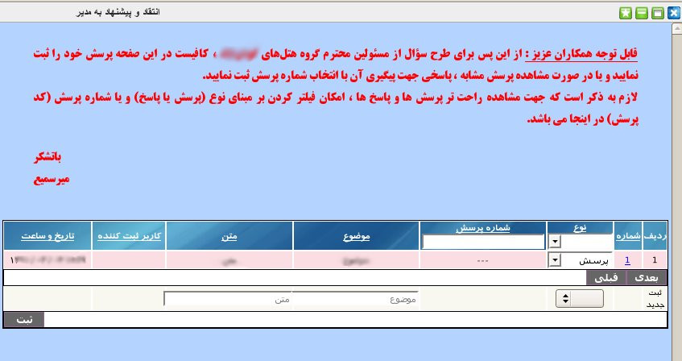

۱- انتقاد و پیشنهاد به مدیر
به کمک این پنل کاربران می توانند تمام سوال ها و پیشنهادات و انتقادات خود از سیستم و مجموعه را به طور مستقیم با مدیریت در میان بگذارند و در صورت نیاز مدیریت به آن پاسخ دهد.

برای ثبت, در پنل پایین صفحه ابتدا نوع متن مورد نظر (پرسش/پاسخ) و سپس موضوع و بعد از آن متن مورد نظر را وارد نموده و در انتها بر روی دکمه ثبت کلیک نماید.